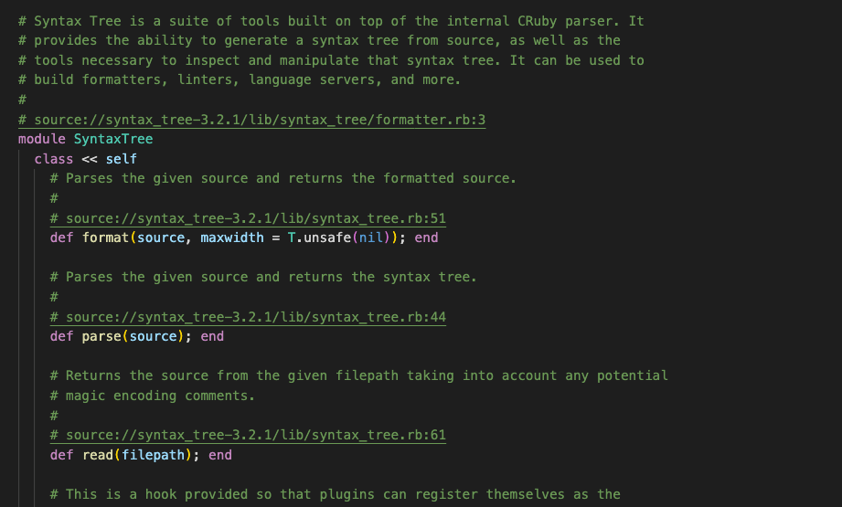

class RubyLsp::Requests::DocumentLink

The document link makes # source://PATH_TO_FILE#line comments in a Ruby/RBI file clickable if the file exists. When the user clicks the link, it’ll open that location.
Example¶ ↑
# source://syntax_tree/3.2.1/lib/syntax_tree.rb#51 <- it will be clickable and will take the user to that location def format(source, maxwidth = T.unsafe(nil)) end
Constants
- GEM_TO_VERSION_MAP
- ResponseType
Attributes
response[R]
Public Class Methods
gem_paths()
click to toggle source
# File lib/ruby_lsp/requests/document_link.rb, line 38 def gem_paths @gem_paths ||= T.let( begin lookup = {} Gem::Specification.stubs.each do |stub| spec = stub.to_spec lookup[spec.name] = {} lookup[spec.name][spec.version.to_s] = {} Dir.glob("**/*.rb", base: "#{spec.full_gem_path}/").each do |path| lookup[spec.name][spec.version.to_s][path] = "#{spec.full_gem_path}/#{path}" end end Gem::Specification.default_stubs.each do |stub| spec = stub.to_spec lookup[spec.name] = {} lookup[spec.name][spec.version.to_s] = {} prefix_matchers = Regexp.union(spec.require_paths.map do |rp| Regexp.new("^#{rp}/") end) prefix_matcher = Regexp.union(prefix_matchers, //) spec.files.each do |file| path = file.sub(prefix_matcher, "") lookup[spec.name][spec.version.to_s][path] = "#{RbConfig::CONFIG["rubylibdir"]}/#{path}" end end lookup end, T.nilable(T::Hash[String, T::Hash[String, T::Hash[String, String]]]), ) end
new(uri, emitter, message_queue)
click to toggle source
Calls superclass method
RubyLsp::Listener::new
# File lib/ruby_lsp/requests/document_link.rb, line 79 def initialize(uri, emitter, message_queue) super(emitter, message_queue) # Match the version based on the version in the RBI file name. Notice that the `@` symbol is sanitized to `%40` # in the URI version_match = uri.path ? /(?<=%40)[\d.]+(?=\.rbi$)/.match(CGI.unescape(uri.path)) : nil @gem_version = T.let(version_match && version_match[0], T.nilable(String)) @response = T.let([], T::Array[Interface::DocumentLink]) emitter.register(self, :on_comment) end
Public Instance Methods
on_comment(node)
click to toggle source
# File lib/ruby_lsp/requests/document_link.rb, line 92 def on_comment(node) match = node.value.match(%r{source://.*#\d+$}) return unless match uri = T.cast(URI(T.must(match[0])), URI::Source) gem_version = T.must(resolve_version(uri)) file_path = self.class.gem_paths.dig(uri.gem_name, gem_version, CGI.unescape(uri.path)) return if file_path.nil? @response << Interface::DocumentLink.new( range: range_from_syntax_tree_node(node), target: "file://#{file_path}##{uri.line_number}", tooltip: "Jump to #{file_path}##{uri.line_number}", ) end